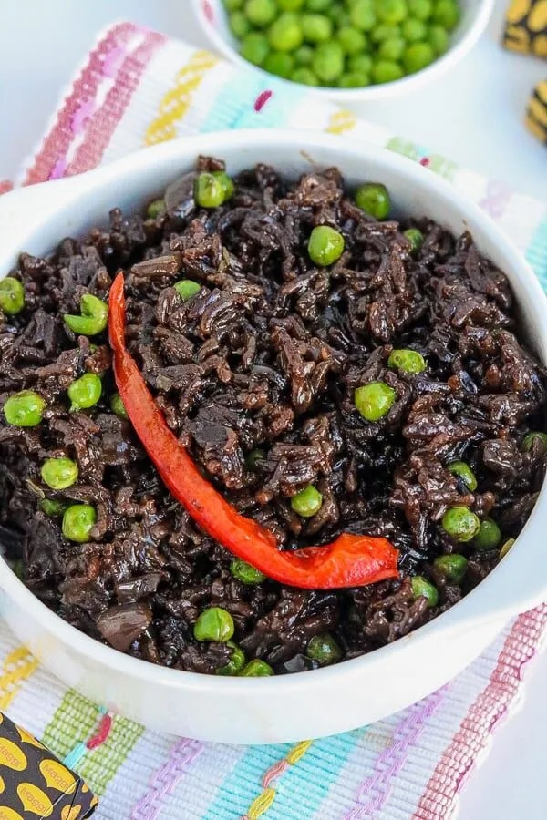

Black Mushroom Rice AKA Diri Djon Djon

Description
Haitian Black Mushroom Rice is not only a family favorite, but a staple of all catered events and potluck dinners. Try this Instant Pot Recipe Below!
Ingredients
- Jasmine Rice
- Djon Djon Maggie Cubes
- Medium Yellow Onion
- Garlic Cloves
- Green Peas
- Red Bell Pepper Strips
- Olive Oil
- Salt and Pepper (Optional)
Steps